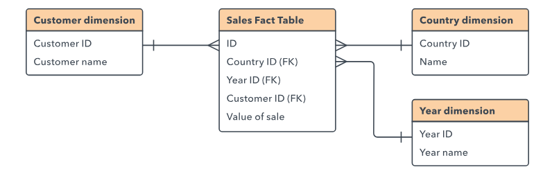

Componentes de una Base de Datos
Las bases de datos cuentan con varios componentes esenciales que permiten la organización y gestión eficiente de la información. Algunos de los principales componentes son:
- Tablas: Son la estructura principal donde se almacenan los datos en filas y columnas.
- Registros: Representan cada fila dentro de una tabla y contienen información específica.
- Campos: Son las columnas de una tabla, cada una con un tipo de dato definido.
- Índices: Mejoran la velocidad de búsqueda y consulta dentro de la base de datos.
- Consultas: Permiten recuperar, filtrar y manipular la información almacenada.
Lenguajes de Bases de Datos
Para gestionar bases de datos se utilizan distintos lenguajes, siendo el más popular SQL (Structured Query Language). Estos lenguajes permiten realizar diversas operaciones sobre la base de datos, tales como:
- Creación de bases de datos y tablas: Permite definir la estructura de almacenamiento.
- Inserción, actualización y eliminación de datos: Se pueden agregar, modificar o eliminar registros.
- Consultas para la recuperación de información: Se utilizan comandos como
SELECTpara obtener datos específicos.
Existen otros lenguajes además de SQL, como:
- PL/SQL: Extensión de SQL utilizada en bases de datos Oracle.
- T-SQL: Lenguaje específico para Microsoft SQL Server.
- NoSQL: Utilizado en bases de datos no relacionales como MongoDB.